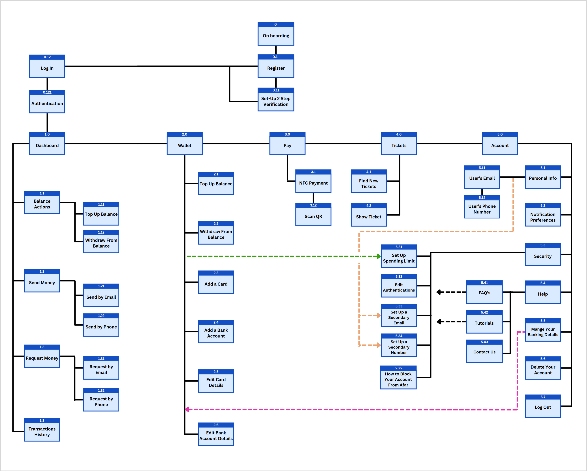

PinnaclePay
The East Asian market has different offers of mobile wallet applications than commonly used in the West. Many of these apps require users to have a local bank account or a certain type of visa.
Pinnacle-Pay is a payment solution tailored for foreigners navigating Asian markets. The app enables quick and secure transactions between all types of accounts. Initially designed to be launched in Singapore, Pinnacle-Pay plans to expand its reach to more countries in the future.
The first challenge is to ensure that the benefits of using the app outweigh any inconvenience or potential risks. Many users have had negative experiences with these types of apps, losing money and feeling powerless to recover it. Our primary challenge is to earn the trust of our users.
I undertook this project from a group of entrepreneurs residing in Vietnam. I'm acquainted with one of them and he shared the problem they would wish to resolve. My role involved conducting UX research and following the design methodology to create a fully functioning prototype suitable for programming and user testing.
First, it's important to note that the design process is far from a linear path, often taking unexpected turns and requiring multiple iterations. For instance, I found myself needing to re-prototype and test several times as new insights emerged from these tests. On top of that, after implementing all the improvements necessary, I saw the need to again empathize with our users and reassess our solution. I'll explain these in detail later on.
During the first execution of the design process I defined the problem our product addresses, I set goals, and anticipated challenges. After analyzing competitors, I focused on understanding potential users and their motivations. Next, I generated initial ideas and solutions for testing. Before creating a final product, I iterated through simpler prototypes to identify and address potential issues. Once I had a complete prototype, I conducted testing with colleagues and potential users, incorporating feedback to improve the design and plan for further refinement.
Competitor analysis is crucial for the UX design for a few important reasons. Firstly, it helps spot what competitors do well and where they fall short, so that we can improve on that. Secondly, it helps figure out where we fit in the market, making it easier to differentiate ourselves effectively and creating our unique brand identity. Crucially, it gives insights into what customers want, making it easier to meet their needs.
PayPal is a leading player in the online payment industry, continuously expanding its services and user base. Analyzing it helped me identify market trends, benchmark practices, and identify untapped opportunities.
By researching Google wallet I could learn more about a Western- American consumer oriented product, and Identify strengths and weakness before iterating my own solution.
Cheq UPI is an app providing a similar service but in India. They aim to bridge the gap between the UPI payment service to non-residents that don't normally have access to it.
Grab is a prominent player in the ride-hailing and delivery service industry across Southeast Asia. It offers a lot of content that can enrich and inspire any e-wallet.
WHAT: Before conducting user interviews I launched an unpaid survey that gathered 15 responses and, although being a small number, it allowed me to approach user interviews with clues regarding user habits. I then interviewed potential clients using 10-12 open-ended questions. WHO: We identified 2 distinct audience groups. First are people who either use or download an e-wallet application, aged (28-42) who travel as a couple, often with kids. Second are somewhat technologically inexperienced yet open-minded older people, aged (43-70) and usually travel with kids, other couples, or part of a group. WHY: By combining both quantitative (survey) and qualitative (interviews) methods, I was able to gather a comprehensive understanding of user behaviors and preferences related to e-wallet usage. This approach sets a strong foundation for informed decision-making and product development.
Each color represents a person
Many users report feeling suspicious or scared of holding payment methods on their wallets. The fear of losing the phone, having it stolen, forgetting passwords, or having your money stolen.
Cash-back or points for free items are among the most influential incentives that make people choose one payment method over another. Even reluctant users might opt to use an app if they get a return worth money.
Users don't usually enjoy carrying bills, and some cards offer undesired payment conditions such as high commission or exchange rates abroad.
Social norms regarding online payments vary widely among countries. it is no surprise then that generally, in countries where most people pay with their mobile, non-residents want to do the same.
Clients want to have somebody who looks after them, and they want to be able to reach that person in case of emergency. When using apps like Apple Pay the bank is still responsible for clients' money. On Pay Pal, however, there is no guarantee.
In an ever-more dynamic world, being able to show or use different currencies easily is a repeated request. Some other desired features are quick to launch by double tapping a button, multiple verification means, ticket management, and a clear confirmation once a deal has gone through
I generated the following two user personas using information collected from competitor analysis, desk research, and user interviews. The reasoning behind this decision is the accumulation of similarities between two distinct users. The first persona cares more about the app's safety and ease of use, while the second persona looks for practical, worth-mastering features. I envisaged the first persona as Amélie, an on-the-fence user who could be won over. The second character is Ron, a tech-oriented person with more familial responsibilities, actively seeking solutions. The creation of these personas ensured that my design was centered around real users, and my iteration was guided by empathy for actual people.
Journey maps are a great tool by which we illustrate a task's journey by its finest details and actions involved. Imagining my personas, in their natural environments, picking up the product, and engaging with it, raises many questions. What are they seeing? what are they clicking? how are they feeling while using the app? The following journeys show simple actions that users are likely to take.
User flows are an important design technic that helped me detail the steps taken by a user leaving from point A, aiming to arrive at a certain point B using the product. Here I sketched two diagrams outlining the user pathway to complete a payment, and to validate a ride ticket. It proved to be an invaluable tool for identifying the necessary screens and interactions of the app before starting the information architecture phase.
The Information Architecture phase requires any designer or product manager to take crucial decision concerning the structure of our solutions. To avoid guessing, I used the Card Sorting method, tasking participants with grouping 20 different concepts. This tool allowed me to give users a more seamless experience of navigation through the app. The higher the number, the higher percentage of time the items were grouped together by users.
Another helpful way to look at the results is using a dendrogram
After sorting the cards, I worked on organizing and mapping out the hierarchy. I drew a sitemap to show how the pages are arranged and linked together in the app. This stage helps us to think of all the user flows and interactions we need to design, and so sets the stage for the first design iteration.
For a larger view pinch to zoom
After sketching a comprehensive site map, and several user flows, it was time to make the plans a reality. Although an exciting stage for every designer, it was important to not fall into the trap of wasting precious time on aesthetics, as this phase is more about designing the interactions rather than the app style. Here are a few low-fi prototypes that include possible pathways for users.
After several rounds of sketching basic wireframes, I refined my concepts into a high-fidelity prototype. I used Figma to create basic wireframes, mid-fidelity, and finally, working and interactive prototypes. These prototypes were then used to conduct Usability Testing, as detailed below.
Usability testing is a design practice in which we let real users use a prototype and by which we reveal confirm or refute certain hypothesis we had regarding the design. It is practice that has a great return for the resources invested.
The goal was to expose any wrong assumptions made while designing the app. Notably by observing human errors. I tried to find new ways the app could be more efficient and learnable for the users.
I tested three main features of the app:
I used three different ways of testing: moderated face-to-face, remote testing, as well as unmoderated testing.
I summarized the information in a Rainbow Spreadsheet and then organized the data into categories using an Affinity Map. The latter makes it easier to communicate the results with stakeholders.
Design Evolution
The initial name for the product was PlutoPay, after several iterations, I renamed it PinnaclePay and rebranded it around a simple and clean image of summits and the range of blue and white colors. Below is the evolution of some important screens, from low to mid and high fidelity.
After several rounds of sketching basic wireframes, I refined my concepts into a high-fidelity prototype. I used Figma to create basic wireframes, mid-fidelity, and finally, working and interactive prototypes.
The image below has a clickable link to the entire design system used for PinnaclePay. It includes my philosophy behind the design, the UI details, elements, and much more. This should facilitate efficient collaboration on the project.
Learnings
This was the first project I undertook entirely by myself. From the problem statement to research, iteration, design, and revisions. It is ready, but like every project it can surely be improved on. I learned a lot about the struggle of extracting useful information from sources online and from people. One mistake I made at the beginning was placing buttons without texts, which can often create confusion. I also left out coaching marks that could ease users' learning curve. Another conclusion I had from the user research is that it might not be enough to create a comfortable environment and ask “good” questions. People don't know what they don't know, and sometimes they can't tell us the best answers because they are unaware of them. For my future user research, I will search for more strategies to find useful information about users' perceptions and behaviors. The next challenge I'm taking on myself is building the web application by myself using front-end developer's skills.